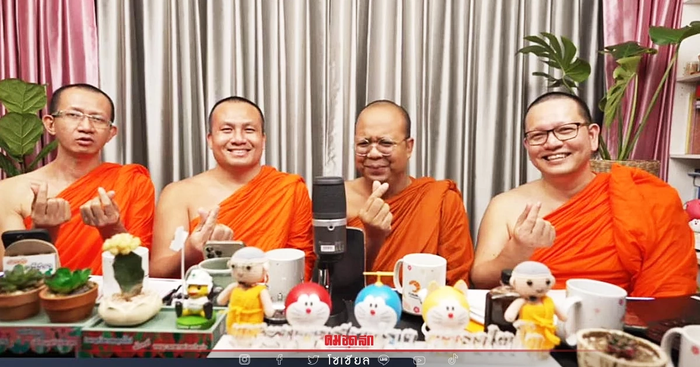

PMNAPAN LIBRARY · SPECIAL ARCHIVE / 2021–2022
ปรากฏการณ์
4 พส.
จากเสียงหัวเราะบนไลฟ์ธรรมะ สู่กระแสที่คนทั้งโซเชียลพูดถึง และเหตุการณ์สำคัญที่พระมหานภันต์ร่วมรับฟัง ให้กำลังใจ และอยู่เคียงข้างมิตรสหาย

THE PEOPLE · FOUR MONKS
เรื่องราวของ “4 พส.”
คำว่า 4 พส. ในคลังนี้ใช้กล่าวถึงพระนักเทศน์สี่รูปที่ปรากฏในข่าวและความทรงจำช่วงนั้น ไม่ได้หมายความว่ามีไลฟ์ฉบับเดียวที่ทั้งสี่รูปอยู่พร้อมกัน
กำลังโหลดรายชื่อ...
VEN. NAPAN · KEY MOMENTS
หมุดหมายที่พระมหานภันต์มีส่วนร่วม
คัดเหตุการณ์ที่มีข่าวยืนยันการเข้าร่วมหรือการแสดงความเห็นของพระอาจารย์ โดยไม่สร้างคำพูดที่ไม่มีต้นฉบับ
กำลังโหลดเหตุการณ์สำคัญ...
WATCH THE MOMENTS · VIDEO ARCHIVE
คลิปที่พาเราย้อนกลับไปในเหตุการณ์
เลือกชมคลิปข่าวและรายการที่มีลิงก์จากผู้เผยแพร่ต้นทาง ไม่ใช่การอ้างว่าเป็นไลฟ์ฉบับเต็ม
กำลังโหลดคลิปจากแหล่งอ้างอิง...
COMPLETE CHRONOLOGY
เส้นเวลา ข่าว และคลิป
เลือกดูตามแง่มุมที่สนใจ หรือค้นชื่อเหตุการณ์ / สำนักข่าว / บุคคล
กำลังโหลดรายการ...
ปี 2564–2565 · เรียงตามวันเกิดเหตุการณ์กำลังเรียงเหตุการณ์จากหลักฐาน...
ไม่พบเหตุการณ์ที่ตรงกับเงื่อนไข
ลองค้นคำอื่น หรือเปลี่ยนหมวดการกรอง
RESEARCH DESK
ต้นฉบับที่ยังอยู่ระหว่างสืบค้น
แยกจากรายการที่พบลิงก์แล้วอย่างชัดเจน เพื่อไม่ให้เข้าใจว่าคลิปข่าวคือไลฟ์ฉบับเต็ม
กำลังโหลดรายการค้นต่อ...
หลักเกณฑ์การจัดเก็บและอ้างอิง
เนื้อหาหน้านี้รวบรวมข่าว บทสัมภาษณ์ รายการ และคลิปจากผู้เผยแพร่ต้นทาง สรุปเหตุการณ์โดยใช้หลักฐานที่มีจริง วันที่บนเส้นเวลาเป็นวันที่เกิดเหตุการณ์เมื่อทราบแน่ชัด ซึ่งอาจต่างจากวันที่เผยแพร่ข่าว; ข่าวและคลิปข่าวไม่ใช่วิดีโอไลฟ์ต้นฉบับทั้งหมด
ข้อมูลเกี่ยวกับคำพูดและบทบาทของพระมหานภันต์จะไม่แต่งเติมหรือถอดเป็นคำพูดอ้างอิงโดยไม่มีต้นฉบับที่ตรวจสอบได้ หากพบข้อมูลใหม่สามารถปรับสถานะหลักฐานและเพิ่มลิงก์ได้ในภายหลัง
ตรวจสอบแนวทางแหล่งเผยแพร่ของ PMNapan Library ↗